ActogramJ supports actogram files in ASCII format, which store the activity data in columns. A file usually contains at least as many columns as there are independant measurements, i.e. if the activity of 10 flies is measured over time, there would be at least 10 columns, one for each fly. The number of rows in the file corresponds to the number of measurements taken for each fly. If a file contains additional information at the top or bottom (which does not belong to the tabular structure described above), it is still possible to open these files.
To open an actogram file, choose "File"→"Open" from the menu bar or click on the "Open" icon in the tool bar. A dialog comes up which lets you choose one or multiple files. Upon your selection, the first selected file will then show up in a preview window, and you can enter some parameters regarding the files to be opened:
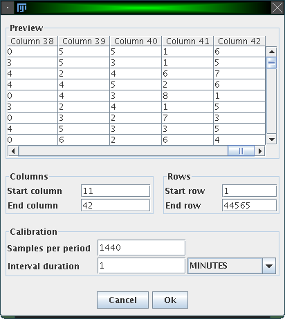
Here is an example: Imagine activity data is collected every minute to investigate the circadian rhythm of an animal. The interval duration is thus one minute, and since the period (1 day) contains 24 * 60 * 60 (= 1440) minutes, "Samples per period" is 1440.
Another example: Data is not collected each minute, but all 10 minutes. Here, the interval duration is 10 minutes, which means that in 1 day (= the period) 1440 / 10 = 144 samples are measured.
Here is a screenshot of the main window of ActogramJ:
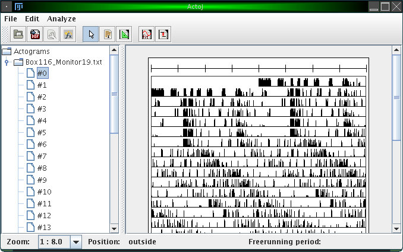
The left hand side consists of a simple browser, which shows a folder for each file you loaded. The contents of each folder are the individual actograms of the corresponding file, numbered consecutively. In this browser, you can select one or more actograms, which will then be displayed in the canvas on the right hand side. To remove a folder (unload a file), you can right-click on it and choose "Remove actograms".
At the bottom of the window there's a status bar. Amongst other information, it displays the current mouse pointer position while you move the mouse over an actogram.
The most obvious thing you will want to change is the zoom level which defines to which details the displayed actograms are rendered. You can change the zoom level using the drop down menu in the status bar:
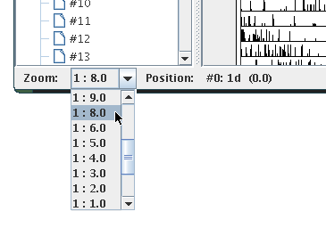
A zoom value of "1 : 2.0" means for example that the resulting actogram will be half of the size of the original actogram. In this case, values will be averaged pairwise, i.e. the first and the second value, the third and the fourth value, etc.
Several other display settings can be adjusted. These are the number of plots shown per line, the upper limit of the displayed activity values, the maximum number of actograms drawn in a row, the number of ticks in the calibration bar, the width to heigth ratio of the displayed actograms and the units used for displaying the freerunning period in the status bar:
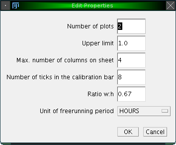
You can show additional bars for each actogram, which indicate the state of external influences like light or temperature. To do so, right-click on a folder in the actogram browser and choose 'Add environmental bar':
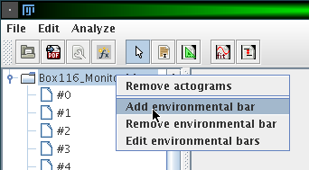
A window opens which lets you adjust the name of the external influence and the intervals where this influence is either on or off:
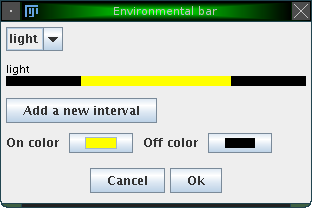
By clicking on 'Add a new interval', you can specify various intervals in which the external variable is on or off. Additionally, you can change the color for the 'on' and 'off' state. The figure above shows e.g. an external influence 'light' with an 'on' interval from 360 to 1080 (from an entire period length of 1440 minutes, conforming to the example introduced earlier). The color for the 'on' state was changed to yellow. The result is illustrated in the following figure:
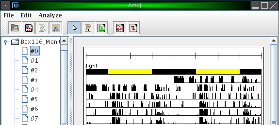
It is possible to export one or more actograms to pdf. To do so, click on the menu item "File"→"Export PDF" or on the corresponding icon in the tool bar. This will render all actograms which are shown on the right canvas into a single pdf file. All bars, like the calibration bar and optionally environmental bars, will be exported, too. In particular, the currently used zoom level will be used to render the actograms into pdf. To create a file with higher resolution, you may want to adjust the zoom level before.
Simple transformations and calculations can be applied to actograms. These transformations will always be applied to all actograms shown in the actogram canvas.
To envoke calculations, click on "Analyze"→"Calculate" or on the corresponding icon in the tool bar. The following dialog will appear:
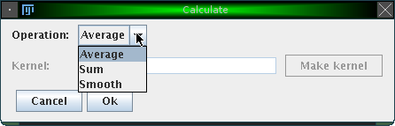
The following operations are currently available:
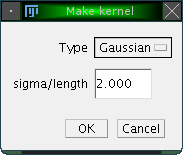
Two methods are available, to create either a Gaussian kernel with a specified standard deviation or a uniform kernel with a given length. Both methods represent a form of sliding window averaging.The resulting actograms of such calculations are stored in a seperate folder "Calculated" in the browser. The figure below shows the result of applying the "Average" operator with an automatically generated Gaussian kernel with standard deviation (sigma) of 100.
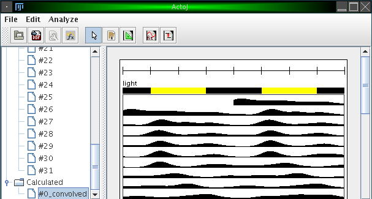
The freerunning period can either be determined automatically or manually. This section describes how to do so manually.
ActogramJ can currently be in three modes. These modes are "pointing" (the default), "selecting" or "freerunning period". Enter now the "freerunning period" mode by selecting "Edit"→"Period tool" from the menu or click on the corresponding icon in the tool bar. You can now draw a triangle by dragging the mouse over the corresponding area in an actogram:
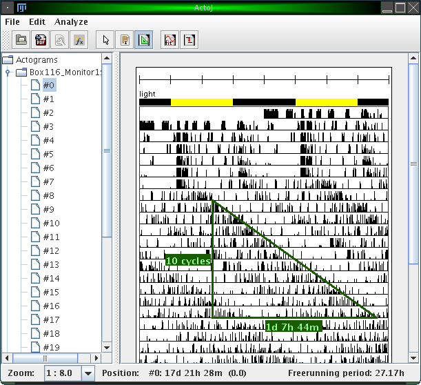
Vertically, the number of cycles is indicated. Horizontally, the time delay is indicated. The freerunning period can be seen in the status bar (27.17h) in the figure above).
After selecting a region, choose "Analyze"→"Periodogram" from the menu or click on the corresponding icon in the tool bar. A dialog opens, which asks for a few parameters:
Please make sure to also read our brief Review of the four implemented periodogram methods, as well as the cautions applying particularly to the Chi-Square method.
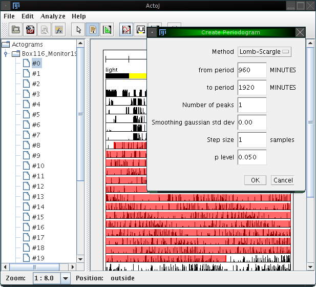
Using the actogram, the interval and the parameters as shown above, the following periodogram is calculated:
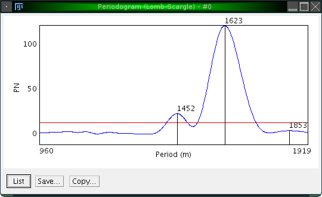
Three peaks are highlighted, and it is easy to confirm that the desired peak is the one at 1623.
The p value level for the actogram is displayed as a red line.
Both periodogram values and p values can be shown as a list (by clicking on 'List'), and saved as an Excel sheet for further analyzis with third-party software.
As mentioned above, periodograms are calculated using either the "Fourier", "Chi-Square" or "Lomb-Scargle" method. For completeness, the formulas are given here. They are taken from [3], were more detailed explanations can be found. The following formulas assume a data set with N values (i.e. xi for i = 1 to N):
In Fourier analysis, the spectral energy (R2) of each frequency j/N [for j = 1 to (N-1)/2] can be calculated as:
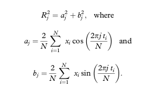
For a data set which can be folded into K blocks of period P, the QP statistic used in the chi square periodogram procedure is computed as:
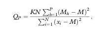
where Mh is the mean of K values under each time unit of the period length [Mh=(sum xi)/K, for i = 1 to (N-K) in P increments], and M is the mean of all N values.
The Lomb-Scargle periodogram is computed as:
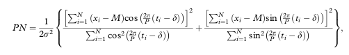
where M is the mean of all N values, σ2 is the variance of all N values, P is the period being tested, and δ is a term used to adjust the times of unequally spaced data that can be computed as:
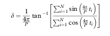
Acrophase, activity on- and offset are preferred measures for tracking a characteristic moment of the circadian cycle along successive periods. To calculate the acrophase in ActogramJ, first select the time interval for which it should be calculated. Choose then "Analyze"→"Acrophase" from the ActogramJ menu. For each selected period, the acrophase is indicated in a small blue triangle. Additionally, a regression line is calculated and shown:
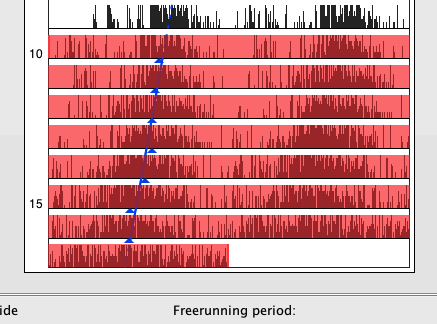
The acrophase is calculated as the radial center of mass:
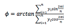as described in [6].
Similarly, activity on- and offsets can be calculated. Again, select an area of interest choose this time "Analyze"→"Activity on- and offset" from the menu. Unlike the acrophase marker, the calculation of activity on- and offsets requires usually some smoothing of the original data. A dialog asks for the corresponding parameters:
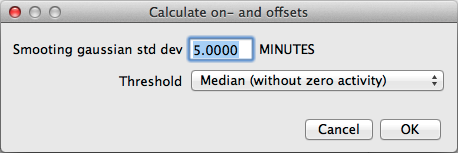
Activity on- and offsets are shown in red:
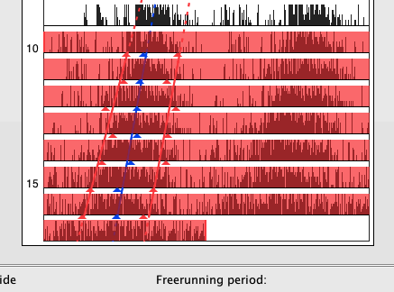
To change the way markers (like the acrophase and activity on-/offset markers) are displayed you can click on the corresponding actogram in the left panel:
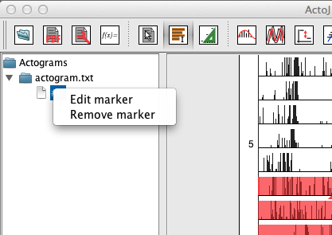
To remove a marker, just click on "Remove marker" and select the marker to remove from the displayed list.
To edit a marker, click on "Edit marker":
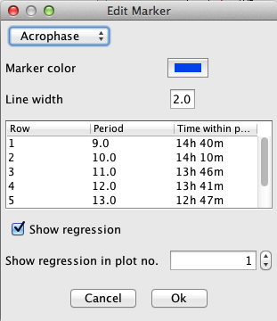
These are the individual items in the dialog:
Any changes to the dialog will directly update the markers in the actogram. You can revert all changes by clicking on "Cancel"
A natural way for visualizing the activity over the length of one period is to create an average activity pattern. This is done by subdividing the entire actogram into equal intervals, then sum them up and devide the result by the number of cycles. The result is an average activity diagram for a single animal.
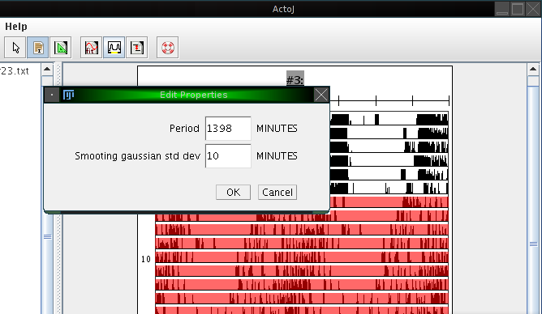
To create an average activity pattern in ActogramJ, first select a region of interest in an actogram, using the selection tool. One may then wish to determine the period length, either manually or automatically, as described in the sections above. After doing so, click on "Analyze"→"Periodogram". A dialog opens which asks for the period length and the standard deviation of a smoothing Gaussian kernel. For the period length, enter the number you determined before. The standard deviation defines the degree of optional prior smoothing before creating the average activity pattern:
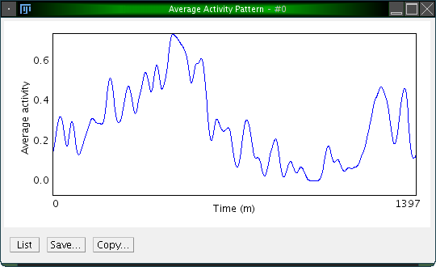
Sometimes one wishes to compare several actograms, where one may show an overall high activity level while the other one has an overall low activity. To facilitate comparison, one would like to normalize the overall activity.
This can be done by clicking on "Analyze"→"Normalize". Like the calculation functions, this works on all displayed actograms. A dialog opens which asks you for the on which should serve as a reference actogram. From this actogram, the overall activity is calculated. All other actograms are then scaled such that their overall activity matches the one of the reference actogram.
| [1] | Van Dongen HP, Olofsen E, VanHartevelt JH, Kruyt EW: A procedure of multiple period searching in unequally spaced time-series with the Lomb-Scargle method. Biol Rhythm Res 1999, 30(2):149-77. | |
| [2] | Ruf T: The Lomb-Scargle Periodogram in Biological Rhythm Research: Analysis of Incomplete and Unequally Spaced Time-Series. Biol Rhythm Res 1999, 30(2):178-201. | |
| [3] | Refinetti R, Cornílissen G, and Halberg F: Procedures for numerical analysis of circadian rhythms. Biol Rhythm Res 2007, 38(4): 275-325. | |
| [4] | Helfrich-Förster C: Differential control of morning and evening components in the activity rhythm of Drosophila melanogaster--sex-specific differences suggest a different quality of activity. J Biol Rhythms 2000, 15(2):135-54. | |
| [5] | Canal-Corretger MM, Vilaplana J, Cambras T, Díez-Noguera A: Functioning of the rat circadian system is modified by light applied in critical postnatal days. Am J Physiol Regul Integr Comp Physiol 2001, 280(4):R1023-30. | |
| [6] | Díez-Noguera A: Methods for serial analysis of long time series in the study of biological rhythms. J Circ Rhythms 2013, 11:7. | |
| [7] | Glynn EF, Chen J and Mushegian AR: Detecting periodic patterns in unevenly spaced gene expression time series using Lomb-Scargle periodograms. Bioinformatics (2006) 22:310-316. | |
| [8] | Lomb N: Least-squares frequency analysis of unequally spaced data. Astrophys Space Sci (1976) 39:447-462. | |
| [9] | Plautz JD, Straume M, Stanewsky R, Jamison CF, Brandes C, Dowse HB, Hall JC and Kay SA: Quantitative analysis of Drosophila period gene transcription in living animals. J Biol Rhythms (1997) 12:204-217. | |
| [10] | Schimmel M: Emphasizing difficulties in the detection of rhythms with Lomb-Scargle periodograms. Biol Rhythm Res (2001) 32:341-345. |